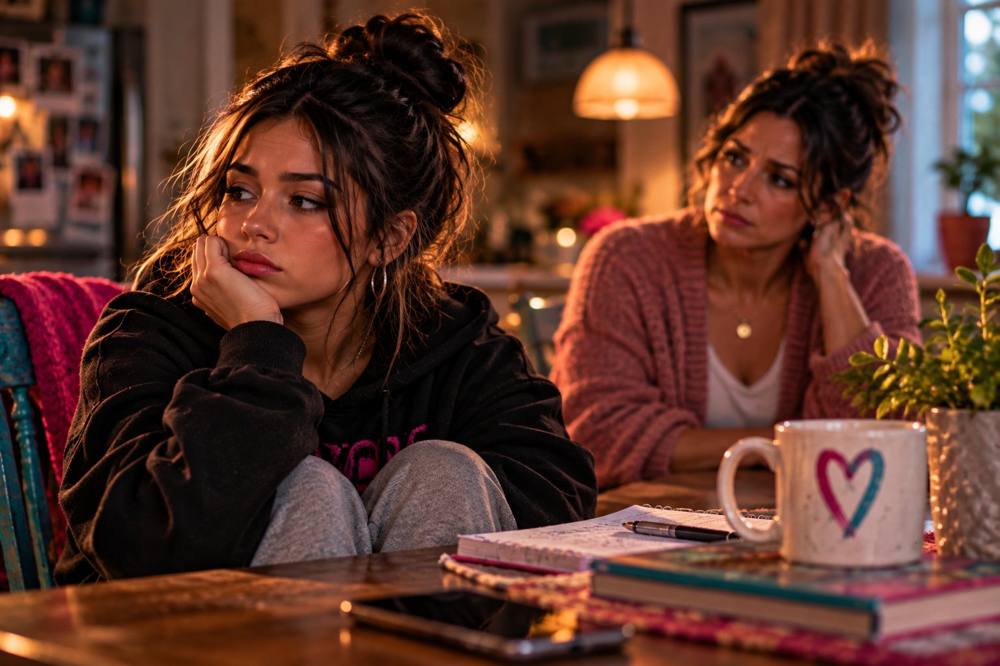

When the arguments stop, but the distance grows.
Silence can look like peace from the outside. Inside a relationship, it can tell a different story.
Read the storyFOUNDATIONS NEW MEXICO THE JOURNAL
Real conversations. Unspoken feelings. The beautiful, complicated business of being human.

THE FEATURED STORY 01 / 03
Sometimes the words that sound like indifference are asking a much harder question: Is it safe to care out loud?
Step inside the storySilence can look like peace from the outside. Inside a relationship, it can tell a different story.
Read the storyCaring deeply about another person doesn’t require disappearing from your own life.
Read the storyReflections for education and conversation, not a substitute for individualized mental health care.